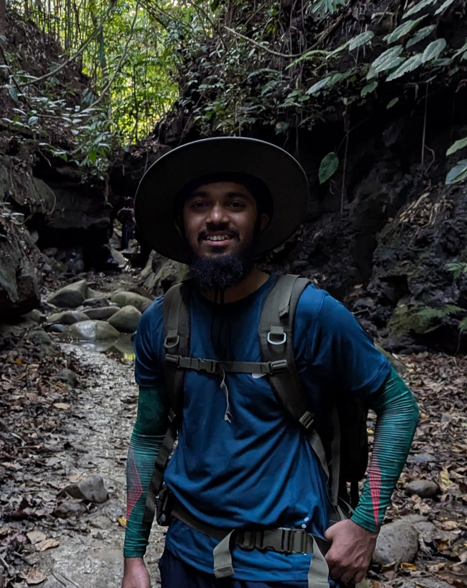

Hi...!!!
I'm Ahmad Al-Imtiaz — a prospective Ph.D. student in astrophysics with a passion for exploring the universe through observations. I earned my B.Sc. and M.Sc. in Physics from Shahjalal University of Science and Technology (SUST), Bangladesh, and I am currently working as a Graduate Research Assistant at the Center for Astronomy, Space Science and Astrophysics at Independent University, Bangladesh. Previously, I worked as a Lecturer at Daffodil International University and as an Assistant Teacher of Science at Reaz Public School in Dhaka, Bangladesh.
My research focuses on the internal structure, chemical composition, and evolution of galaxies, primarily leveraging strong gravitational lensing. I have hands-on experience processing imaging data from HST, JWST, and Gemini/GSAOI, alongside spectroscopic data from Keck/MOSFIRE and JWST/IFU. My analytical toolkit includes modeling complex lensing systems using Lenstronomy and performing Spectral Energy Distribution (SED) fitting with ALF (Absorption Line Fitter) and Dense Basis.
My recent joint first-author publication in Astronomy & Astrophysics (July 2025) investigates the correlation between the local environment and the internal structure of massive elliptical galaxies. Currently, my ongoing projects include analyzing the chemical composition of the lensed quiescent galaxy AGEL0014 and studying the stellar populations of the strongly lensed Sparkler galaxy.
Beyond academics, I have attended several international workshops and schools in astronomy and astrophysics, which have strengthened my skills as both a researcher and an educator. I am passionate about science communication and outreach — particularly inspiring young students to explore the wonders of the night sky.
Outside of academics, I love traveling — especially to mountains and green places — and enjoy cycling as a way to both explore and stay physically active. This website is a window into my academic journey, research, teaching, travels, and personal writings. Feel free to explore!
Contact Information
Email: ahmadal.imtiaz@gmail.com